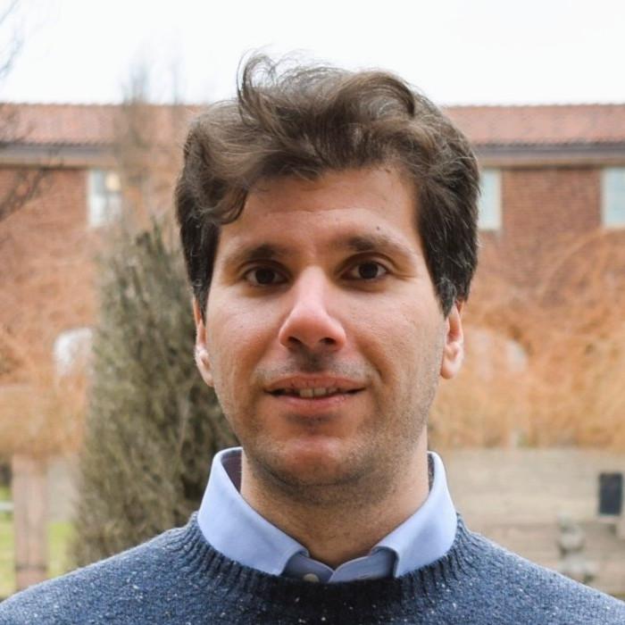

CV – Can Aknesil

17 November 2026
Kungliga Tekniska Högskolan, SE-100 44 STOCKHOLM
aknesil@kth.se
github.com/canaknesil
linkedin.com/in/can-aknesil-phd-831507a3
www.canaknesil.com
Hardware security researcher (PhD, KTH) specializing in power/EM and microarchitectural side-channel attacks, FPGA security, and compiler-level countermeasures (LLVM). Experienced in industry collaboration with Ericsson Research, teaching, and student supervision.
PROFESSIONAL EXPERIENCE
Postdoctoral Researcher (June 2025 – Present)
KTH Royal Institute of Technology, Stockholm
School of Electrical Engineering and Computer Science, Department of Network and Systems Engineering
- Spectre-type attacks observed through power side-channel analysis, without relying on dependent loads
- Detection and mitigation of speculative side channels and constant-time violations at the compiler level, with LLVM
- Side channels on multi-tenant GPUs
Doctoral Researcher (PhD) (March 2021 – June 2025)
KTH Royal Institute of Technology, Stockholm
School of Electrical Engineering and Computer Science, Department of Electrical Engineering, Division of Electronics and Embedded Systems
Industry collaboration with Ericsson Research (hybrid fingerprinting, FPGA EM sensor, covert antennas)
- Side-channel fingerprinting of neural networks
- Malicious-circuit detection in cloud FPGAs without IP disclosure
- Covert EM sensor implementations on FPGA
- Covert antenna implementations on FPGA
- EM side-channel analysis on general-purpose computers (Raspberry Pi)
- Side-channel attacks on Xilinx Artix-7 FPGA bitstream encryption engine
- Bitstream extraction from SPI flash communication
Research Engineer (June 2020 – January 2021)
KTH Royal Institute of Technology, Stockholm
School of Electrical Engineering and Computer Science, Department of Electrical Engineering, Division of Electronics and Embedded Systems
- Breaking Advanced Encryption Standard (AES) on FPGA via power side-channel attack combined with deep learning
- Machine learning modeling attacks on Physically Unclonable Functions (PUFs)
Intern (June 2019 – November 2019)
Ericsson AB, Stockholm
High Performance Broadband/Radio Software Department
- Robust Header Compression (RoHC) for Profile 6 (TCP/IP)
- Interfacing C++ high-performance radio simulation libraries from Julia, using Cxx.jl
Intern (July 2017 – September 2017)
CTech Bilişim Teknolojileri San. ve Tic. A.Ş., Istanbul
Hardware Department
- Programmable clock generator chip, RF receiver chip, and RF transmitter chip programming via BeagleBone Black
Intern (February 2017 – June 2017)
Koç University, Istanbul
IT Department
Communication and Infrastructure Services
Intern (July 2016 – August 2016)
OBSS, Istanbul
Technology Department
- HR job advert & application management web application, in Java
OTHER PROJECTS
- Go (board game, not the programming language) computer game in Rust (Independent)
- FPGA implementation and statistical analysis of Arbiter PUF with 4x4 Switch Blocks (MSc Embedded Systems thesis, under the supervision of Elena Dubrova)
- Single-Event Upset Detector (SEUD) Experiment in the Miniature Student Satellite (MIST) (MSc Embedded Systems final project)
- CUDA Compilation Support for Snowflake DSL (Computer Engineering Final Project)
- Limon: A simple and powerful general-purpose programming language (Independent)
- FPGA C++ Framework for FIR Filtering Applications (Electrical & Electronics Engineering Final Project)
- MAM: A Memory Allocation Manager for GPUs, in C, compatible with C++ and CUDA (ParCoreLab)
- Cannon’s matrix multiplication algorithm, in C, using MPI library (Independent)
- Unix-style operating system shell, in C, on Linux (During undergraduate study)
- Air traffic control simulator, in C++, using pthread.h library (During undergraduate study)
- Cache simulator, in C (During undergraduate study)
- Sound Transmission via Amplitude Modulation of Light, electronic circuit and simulation on PSpice (During undergraduate study)
- Digital clock, on FPGA board using VHDL (During undergraduate study)
PROFESSIONAL SKILLS
Hardware and computer security
- Power/EM side-channel attacks
- Microarchitectural side-channel attacks
- FPGA security
- GPU security
- Machine learning security
- Networking and network security
- Penetration testing
Hardware design & development
- FPGA design and verification with VHDL and SystemVerilog (using Xilinx Vivado and Intel/Altera Quartus)
- Tcl scripting in the Xilinx Vivado environment
- RTL synthesis with Yosys
- Analysis of digital circuits
Embedded systems design & development
- Embedded real-time platform and software development with Nios II soft-processor and MicroC/OS
- Embedded software development with Linux
- Embedded software development directly on the processor in AVR Assembly, MIPS Assembly, ARM Assembly, C, and C++
- Fault-tolerant systems design
High-performance computing (HPC)
- Parallel programming with pthread library, MPI, and CUDA
Computer science
- Software engineering
- Scientific programming
- Machine learning (supervised and unsupervised)
- Proficiency in Linux (daily use, system administration, driver and application development)
- Compiler and interpreter design with Lex (Lexical Analyzer), Yacc (Parser), LLVM (Optimization development), and PLY (Python Lex-Yacc)
- Version control with Git and Subversion
- Build automation with GNU Make and CMake
Programming/scripting languages
- C, C++, Rust, Java, Julia, Python, Matlab, Lisp, Haskell, Bash, PowerShell, Tcl
Various other areas I have experimented with
- PCB design using KiCad
- Mixed-signal IC design using Cadence Virtuoso
- Image analysis and computer vision
- Mobile application development for iOS (Objective-C) and Android (Java)
- Web development with HTML, JavaScript, CSS, PHP, Java EE, and Django
- Database design with SQL and MongoDB
- Circuit development for audio applications
- Electronic circuit simulation with PSpice and LTspice
- Emacs Lisp programming
- Linux server maintenance
EDUCATION
Doctoral Study in Information and Communication Technology (2021 – 2025)
KTH Royal Institute of Technology, Stockholm
School of Electrical Engineering and Computer Science
Specialization: Electronic Systems
Title: Protecting Remote FPGAs and Embedded Devices from Non-Invasive Physical Attacks
Supervisor: Prof. Elena Dubrova
Master of Science in Embedded Systems (Platform track) (2018 – 2020)
KTH Royal Institute of Technology, Stockholm
School of Electrical Engineering and Computer Science
Bachelor of Science in Electrical & Electronics Engineering (2013 – 2018)
Double Major in Computer Engineering
Koç University, Istanbul
College of Engineering
(25% Scholarship)
GPA: 3.44 / 4
Vehbi Koç Scholar in 2014 and 2016
Member of Koç University - Parallel and Multicore Computing Laboratory
High School (2008 – 2013)
Notre Dame de Sion French High School, Istanbul
PUBLICATIONS
TALKS (excluding presentations of my own research at conferences)
Invited Talk (10 June 2026)
Uppsala University, Uppsala, Sweden
Department of Electrical Engineering, Integrated Smart Systems Technology
Title: Side Channels with Can
ACADEMIC SERVICE
USENIX Security Program Committee member (2027)
TEACHING EXPERIENCE
Course Development
KTH Royal Institute of Technology, Stockholm
Developed the following lectures, associated laboratory exercises, and quizzes for EP2780 Digital Forensics and Incident Response, to be delivered in Fall 2026:
- Mobile Forensics
- Physical Attacks & Hardware Trojans
Lecturer (Fall 2026)
KTH Royal Institute of Technology, Stockholm
- EP2780 Digital Forensics and Incident Response (Fall 2026)
Guest Lecturer (29 September 2025)
KTH Royal Institute of Technology, Stockholm
Title: Physical Attacks & Hardware Trojans
Course: EP2780 Digital Forensics and Incident Response
Teaching Assistant
KTH Royal Institute of Technology, Stockholm
- IL1333/FIL3030 Hardware Security (during doctoral studies)
- ID2218/FIL3200 Design of Fault-Tolerant Systems (during doctoral studies)
- IL2203 Digital Design and Hardware Description Languages (during doctoral studies)
- EP2780 Digital Forensics and Incident Response (during postdoc)
Undergraduate Teaching Assistant
Koç University, Istanbul
- Comp200 Structure and Interpretation of Computer Programs (Fall 2017)
Section Leader (20 – 30 June 2016)
Stanford University & Koç University, Istanbul
CS Bridge Program
SUPERVISION EXPERIENCE
Master's Student Supervision
KTH Royal Institute of Technology, Stockholm
- Federico Mercurio. Enhanced RAN Security Test Planning Through LLM-Driven Test Selection and Structured RAG Workflows. (Spring 2026)
- Miguel Valgañón Soria. Reproducible and Relational Method for Detecting Constant-Time Violations in LLVM Optimization Passes. (Spring 2026)
Doctoral Student Supervision
KTH Royal Institute of Technology, Stockholm
- Siyao Liu (Spring 2026)
(In addition to the main and co-supervisors)
PEDAGOGICAL TRAINING
KTH Royal Institute of Technology, Stockholm
- FLH3000 Basic Communication and Teaching, 3 credits
- LH207V Doctoral Supervision, 3 credits (ongoing)
LANGUAGE SKILLS
Turkish: Native
English: Professional fluency
Swedish: Intermediate
French: Intermediate
AWARDS
- Vehbi Koç Scholar 2014, 2016
- International mathematical competition named "Le Kangourou des mathématiques", 22nd among 10627 participants, 2011
CONFERENCES & WORKSHOPS
- FPGAworld Conference in Stockholm. (2026)
- Challenges and Opportunities of PQC Deployment Workshop. (2026)
- IEEE 55th International Symposium on Multiple-Valued Logic (ISMVL). Presented a research paper. (2025)
- 27th Euromicro Conference Series on Digital System Design. Presented a research paper. (2024)
- Cybersecurity and Privacy (CySeP) Summer School. (2024)
- 30th Reconfigurable Architectures Workshop (RAW). Presented a research paper. (2023)
- 30th IFIP/IEEE International Conference on Very Large Scale Integration (VLSI-SoC). Presented a research paper. (2022)
- FPGAworld Conference in Stockholm. (2022)
- IEEE 51st International Symposium on Multiple-Valued Logic (ISMVL). Presented a research paper. (2021)
- Solid-State Circuits Directions Inaugural Workshop: Hardware Security. (2020)
- TECoSA Federated Learning Workshop. (2020)
- FPGAworld Conference in Stockholm. (2019)
- FPGAworld Conference in Stockholm. (2018)
- National High Performance Computing Conference (BAŞARIM) (Ulusal Yüksek Başarımlı Hesaplama Konferansı). Presented a research paper. (2017)
- Training named "Neuroscience for Leadership" at Kariyer.Net (2017)
- Training named "Idea Production Techniques" at Kariyer.Net (2017)
- Training named "Communication Mastery" at Kariyer.Net (2017)
- Training named "Personal Quality" at Kariyer.Net (2017)
- Training named "Sustainable Motivation" at Kariyer.Net (2017)
- Training named "Gamification" at Kariyer.Net (2017)
HOBBIES & OTHER INTERESTS
- Music: Piano, oud (a classical Turkish instrument), and guitar
- Summer sports: Sailing, windsurfing
- Tennis, table tennis, badminton
- Winter sports: Skiing, ice skating
- Amateur radio (SA0NCA)